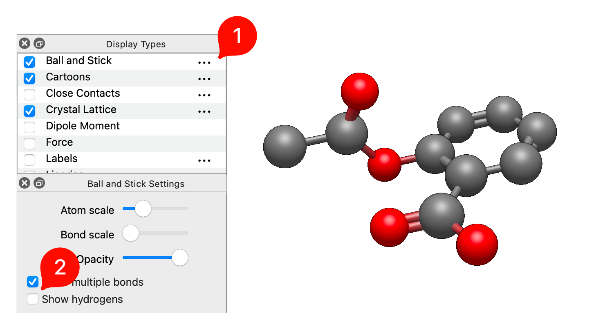
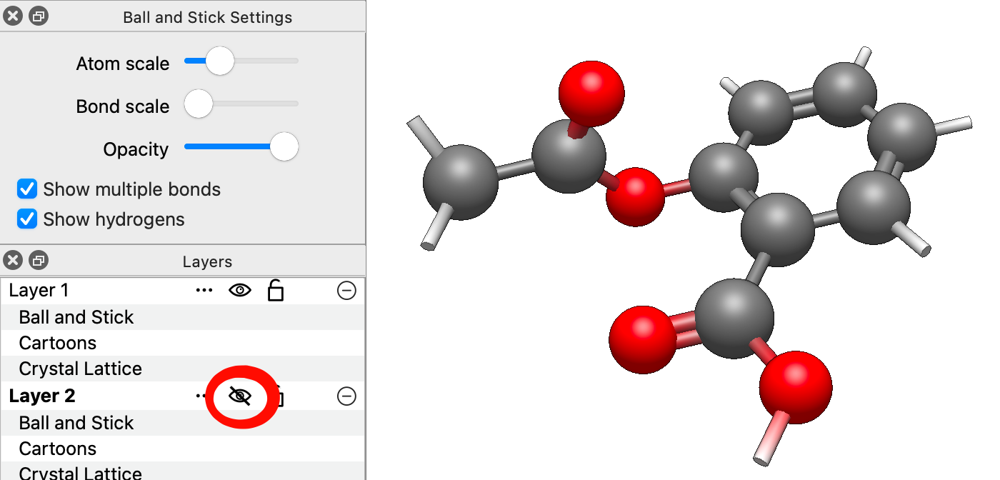

Hiding and Showing Hydrogens#
Hydrogen atoms can clutter the view of a large molecule. Avogadro can hide them without deleting them, so they’re still part of the structure for calculations and saved files. This tutorial shows two ways to do it: a display option, and a layer that you can hide and show with one click.
As an example, insert a molecule with plenty of hydrogens, such as cholesterol (File ⇒ Import ⇒ Download by Name… and type “cholesterol”), or any molecule you’re working on.
Method 1: Turn Off Hydrogens in the Display Options#
The Ball and Stick and Wireframe display types each have a Show hydrogens option.
In the Display Types pane, click the … button next to Ball and Stick (or Wireframe).
Uncheck Show hydrogens.

The hydrogen atoms (and their bonds) disappear. Check the box again to bring them back.
Note
This only affects the display type you changed. If another display type that shows atoms, such as Licorice or Van der Waals, is also turned on, the hydrogens will still be drawn by it. In that case, use Method 2.
Method 2: Put the Hydrogens in Their Own Layer#
Layers let you hide, show and style groups of atoms independently. Putting the hydrogens in their own layer hides them in every display type at once, and lets you bring them back with a single click.
Choose
Select⇒Select by Element…. In the periodic table that appears, click H. Every hydrogen atom is selected.Choose
Select⇒Create New Layer from Selection. The hydrogens move to a new layer, which appears in the Layers pane.In the Layers pane, click the eye icon next to the new layer to hide it.
Note that if you use the Ball and Stick display type, bonds to atoms in other layers will still be shown.

Click the eye icon again to show the hydrogens. Clear the selection afterward with Select ⇒ Select None (Ctrl+Shift+A).
Tip
You can also move selected atoms to a new layer with the Selection Tool: in its Tool pane, choose New Layer under Change Layer.
The same approach works for anything you want to hide or style separately: solvent molecules (Select ⇒ Select Water), a protein around a ligand, or one fragment of a complex. Because each layer has its own display types, you could also keep the hydrogens visible but show them in a different style, for example as thin Wireframe while the rest of the molecule is Ball and Stick.
Warning
New atoms are added to the active layer, highlighted in the Layers pane. If the hydrogen layer is active when you draw or add hydrogens, the new atoms go into that layer. Click the main layer in the Layers pane to make it active before you continue editing.
Hiding Is Not Removing#
Hidden hydrogens are still part of the molecule. They’re included when you save the file, generate an input file, or optimize the geometry, which is usually what you want.
If you really want to delete the hydrogens, use Build ⇒ Hydrogens ⇒ Remove All Hydrogens. Build ⇒ Hydrogens ⇒ Add Hydrogens adds them back, but at newly generated positions, not the original ones.
See Also#
Layers Pane – Working with layers
Display Options Pane – Display options for each display type
Select Menu – Selecting atoms by element, residue and more
Showing Hydrogen Bonds and Other Interactions – Showing hydrogen bonds and other interactions